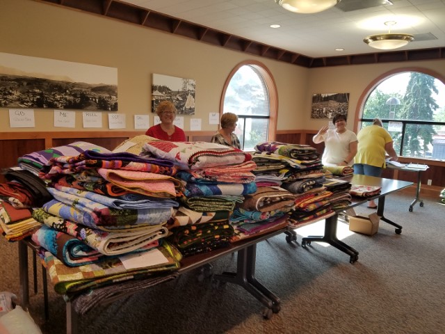
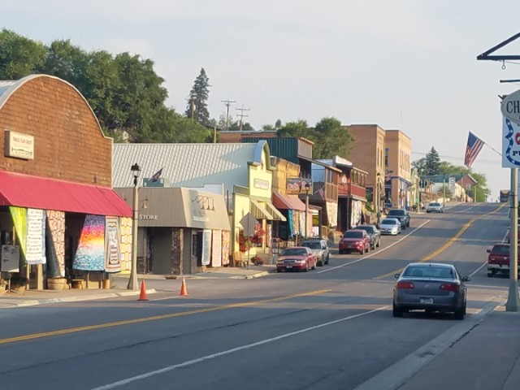
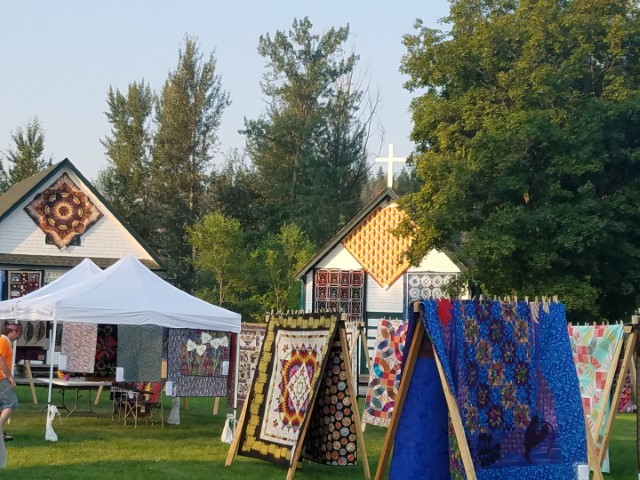
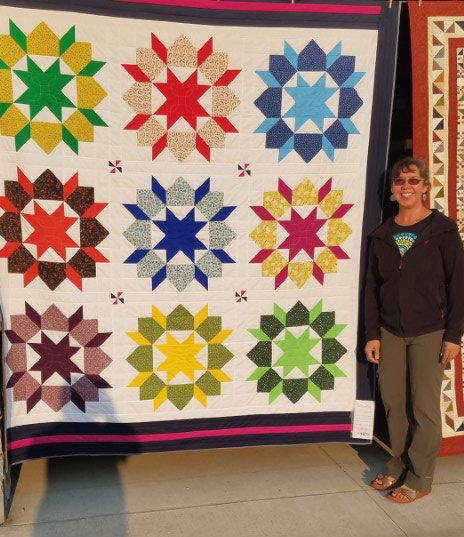
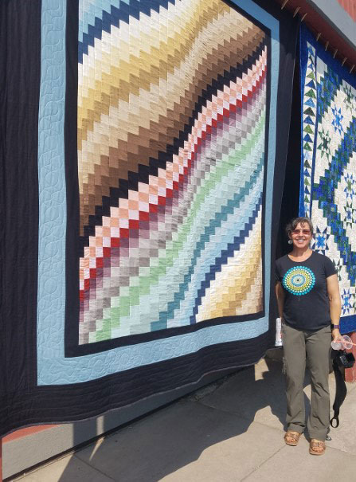
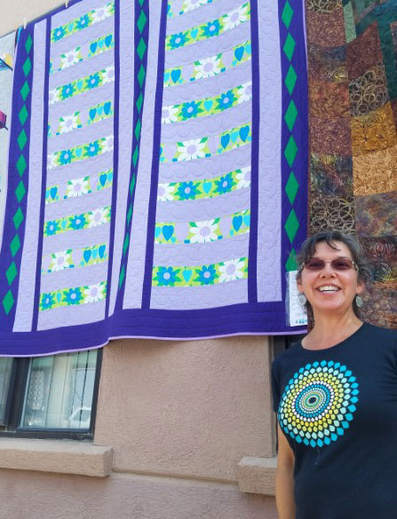
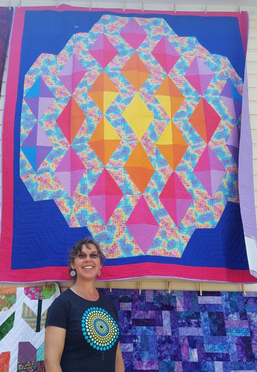
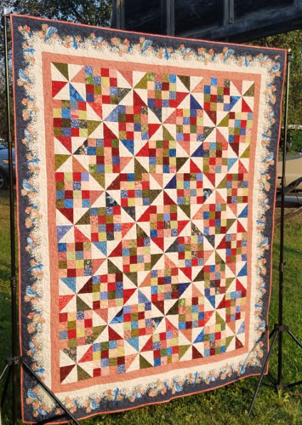
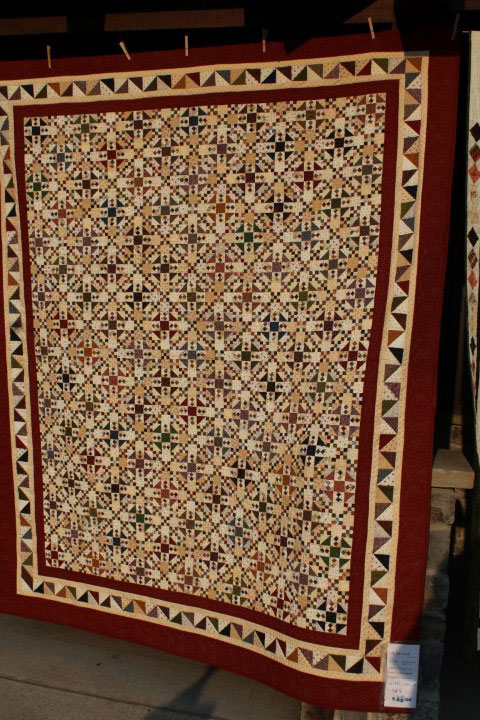

| I am so lucky to live in the town that hosts
this amazing annual show. There are usually at least 500 large
quilts and about 100 miniature quilts displayed every year.
Thousands of people visit from all over the world, it is really an honor
to be a part of it. |
|
 |
 |
| The best volunteer job in the whole show - quilt receiving combines my two
favorite activities: messing with quilts, and putting things in order. I love this job! |
The whole town gets decked out in quilts for one day each year. |
 |
 |
| The historic village is the central focus for the events of the day. |
Me with one of my favorite quilts, Framed Swoon. It sold later that
year. This quilt was hanging right beside the prettiest quilt in the show (behind me). |
 |
 |
| This is me with my "Fall Colors Bargello" which I'm going to keep for our Montana master bed. | This was "Groovy Purple Flower Love" quilt which sold later that
day. It was made based on a set of vintage pillow cases I found at an estate sale. |
 |
 |
| This is my "Digital Geode" - for that person who needs some bright colors in their life! | This was our Scraps 'n Threads guild fundraiser quilt, I helped (a tiny bit) to make it! |
 |
|
| This quilt was voted the favorite of the show. I was honored to meet
the lady who made it and told her she was making me look bad by comparison with my quilt right beside hers. :-) Each patch is 1" or smaller. There is so much fabric in this quilt that it is extremely heavy. Beautiful work. |
|